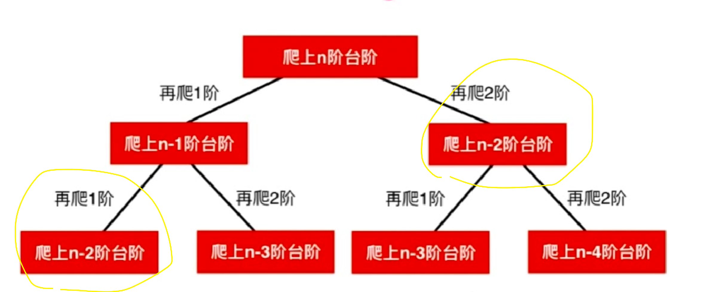

Leetcode 第70题 爬楼梯
假设你正在爬楼梯。需要 n 阶你才能到达楼顶。
每次你可以爬 1 或 2 个台阶。你有多少种不同的方法可以爬到楼顶呢？
**注意：**给定 n 是一个正整数。
示例 1：
输入： 2 输出： 2 解释： 有两种方法可以爬到楼顶。
- 1 阶 + 1 阶
- 2 阶
示例 2：
输入： 3 输出： 3 解释： 有三种方法可以爬到楼顶。
- 1 阶 + 1 阶 + 1 阶
- 1 阶 + 2 阶
- 2 阶 + 1 阶
解题思路
爬楼梯 就是进店的斐波那契数的只是字面上换了换了个皮肤,把 生兔子 换成了 爬楼梯。斐波那契数 在物理学上 和自然里 都有应用。
我们都知道斐波那契函数 是 1 1 2 3 5 8 13
斐波那契 函数 前 2个 定义为 1 和 1
第三个 开始,则是为前 2个数之和 a[n] = a[n-1] + a[n-2]
递归实现
那么 再回到爬楼梯的问题上来,我们 爬楼梯
如果要爬 0 步 楼梯 有 1一种选择,那就是不动 我们可以理解为 空集 {}
如果要爬 1步楼梯 我们还是 一种方法 走一步 我们可以理解为 只有一步 {1}
| 爬楼梯 | 方式(爬n-1级 + 1级 或 爬 n-2级 + 2 级) |
|---|---|
| 爬 n = 0 级 | {{}} |
| 爬 n = 1 级 | {{1}} |
| 爬 n = 2 级 | 爬1级 + 1级 = {{1} +{1}} = {1,1} | 爬0级 + 2级 = {} + 2 ={2} => {{1,2},{2}} |
| 爬 n = 3 级 | 爬2级 + 1级 = {{1,2},{2}} + 1 = {1,2,1},{2,1} | 爬1级 + 2级 = {1} + 2 = {1,2} => {{1,2,1},{2,1},{1,2}} |
| 爬 n = 4 级 | 爬 3级 + 1级 = {{1,2,1},{2,1},{1,2}} + 1 = {{1,2,1,1},{2,1,1},{1,2,1}} | 爬2级 + 2级 = {{1,2},{2}} + 2 = {{1,2,2},{2,2}} |
| 爬 n 级 | 爬 n -1级 + 1级 | 爬 n - 2 级 + 2级 |
从上面表格 我们可以总结出 这么个公式：f(n*)=f(n−1)+*f(n−2)
pub fn climb_stairs(n: i32) -> i32 { climb_stairs_memo(n) } pub fn climb_stairs_memo(n: i32) -> i32 { // 爬0步 1种方法 if n == 0 { return 1;} // 爬 1步 一种方法 if n == 1 {return 1 ;} //f(n)=f(n−1)+f(n−2) return climb_stairs_memo(n -1) + climb_stairs_memo(n - 2); } fn main() { println!("{}",climb_stairs(20)); }
要确定 n 就要 确定 n的 前2项,如果 要求n阶台阶 的走法,那么 2^n级别。但是 如下图 每次计算包含重复的计算,
时间复杂度：O(n^2)
空间复杂度：O(1)
就像上面分析的,由于包含很多重复计算,导致超出了时间复杂度。
那么我们想要 优化的思路是 可以 用空间复杂度换 时间复杂度,我们可以把 所有计算记忆下来,如果遇到相同的计算直接从数组中返回值，这样 就可以大大 减少不必要的重复运算。
pub fn climb_stairs(n: i32) -> i32 { //初始化记忆 数组 为 -1 let mut memory:Vec<i32> = (0..n+1).map(|x| -1).collect(); memory[0] = 1; memory[1] = 1; climb_stairs_memo(n,memory.borrow_mut()) } pub fn climb_stairs_memo(n: i32,memory:&mut Vec<i32>) -> i32 { if memory[n as usize] != -1 { return memory[n as usize] } let res = climb_stairs_memo(n -1,memory) + climb_stairs_memo(n - 2,memory); //保存数组 memory[n as usize] = res; res } fn main() { println!("{}",climb_stairs(20)); }
动态规划思想
上面的 递归在改进后,最后我们使用一个数组去记录每个 计算过的值,这就是动态规划的思想了,一个问题 分解成 跟小规模的子问题 找到每个子问题 的最优解 保存起来 合在一起就是 这个问题的最优解,就是动态规划的思想了。
pub fn climb_stairs(n: i32) -> i32 { let mut arr = Vec::new(); arr.push(1); arr.push(1); for i in 2..(n + 1) as usize{ arr.push(arr[i-1] + arr[i-2]); } //返回 return arr[n as usize]; } fn main() { println!("{}",climb_stairs(20)); }
我们使用了一个 O(n) 的数组存放了数据,并且 使用了 一次循环,得出：
空间复杂度： O(n)
时间复杂度： O(n)
优化动态规划
在这提中,我们计算 n 值 需要 n -1 和 n -2 的值,所以完全没必要 使用一个数组,所以可以 直接使用2各变量替代。
将 空间复杂度降到 O(1)
pub fn climb_stairs(n: i32) -> i32 { let mut n_2 = 0; let mut n_1 = 1; for i in 0..n as usize { let x = n_2; n_2 = n_1; n_1 = n_1 + x; } return n_1; } fn main() { println!("{}",climb_stairs(20)); }